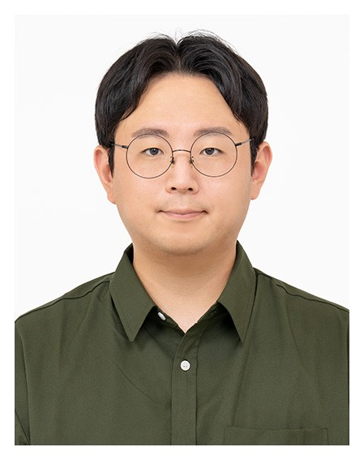

분석에서 시작해 설계로,
다시 실행으로.
10년 동안 세 번 일의 무게중심이 옮겨갔습니다. 지금 하는 일부터 거슬러 올라가며, 시기마다 무엇을 했는지보다 무엇을 배웠는지를 먼저 적었습니다.

강한섬 · 한국보건복지인재원 품질인증사업팀 대리
을지대학교 의료경영학 석사 · 조직문화전문가 · 평생교육사
다음 10년은 조직 안에서 일하고 싶습니다. 밖에서 진단하고 떠나는 사람이 아니라, 구성원 곁에서 다음 해의 숫자가 바뀌는 것을 끝까지 확인하는 HRD·조직문화 담당자로요.
진단도구 개발과
개선 컨설팅 PL
LEARNED진단을 개선까지 닫는 방법
개원 22주년 기념 우수직원 표창
보건의료정보관리사 AI 보수교육체계 개발 컨설팅
구성원의 AI 인식과 역량을 진단하는 도구를 직접 만들고, 그 결과로 교육체계를 설계하고 있습니다. 동시에 설문 코딩, 현장평가, 보고자료 제작을 AI로 다시 설계해 팀 업무에 쓰고 있습니다.
간호조무사 보수교육 종합지원 · 직무교육 개선 컨설팅
처음으로 PL을 맡아 사업기획부터 팀원 코칭까지 이끌었습니다. Borich 요구도로 우선순위를 정하고 강사훈련연수를 직접 운영했습니다.
국가품질혁신경진대회 학습조직부문 동상
충청북도 품질분임조 경진대회 최우수상
위생교육기관 평가사업
13개 기관을 같은 잣대로 볼 수 있도록 평가지표를 새로 설계했고, 평가로 끝내지 않고 저조기관 개선교육과 성과보고회까지 운영했습니다.
간호조무사 직무교육 성과평가 컨설팅
성과평가와 교육요구 조사도구를 새로 만들고, 성과에 영향을 주는 요인을 분석해 무엇을 바꿔야 효과가 나는지 찾았습니다.
진단과 평가로 무게를 옮긴 건 질문 하나 때문이었습니다. 교육을 설계하는 일에 익숙해질수록, 이 교육이 정말 무언가를 바꿨는가가 궁금해졌습니다.
제약바이오
직무교육 기획·운영
LEARNED현장의 언어와 직무의 구조
연말 우수직원 표창
바이오헬스 직무교육 개편과 수료생 취업 성과를 인정받았습니다.
심화 직무과정 신규 기획
공장과 생산라인 견학 중심의 GMP 현장적용과정, SOP·DI 관리를 다루는 품질보증 직무과정을 새로 만들었습니다. 바이오헬스 인재양성 포럼에서는 14개 기관과 함께 산·학·관 협력체계를 운영했습니다.
바이오헬스 미래전문인력 양성사업
연구개발, 생산품질, 마케팅은 같은 회사 안에서도 쓰는 말이 다릅니다. 직군별로 교육을 따로 설계했습니다. R&D는 합성·바이오의약품 트랙으로 나눴고, MR 과정은 '1분 디테일링'과 롤플레잉 중심으로 바꿨으며, 현업 강사 pool을 새로 만들었습니다.
HRD 전문 공공기관으로 옮기기 전에는 컨설팅을 했습니다. 조직을 진단하는 법은 익혔지만, 진단 뒤에 사람이 실제로 달라지게 만드는 일은 교육이 맡고 있었습니다.
병원 컨설팅과
조직문화 진단
LEARNED데이터로 문제를 규명하는 법
㈜에이치엠앤컴퍼니 컨설팅사업부 연구원
병원 경영진단과 조직운영 진단 인터뷰, 병원 중간관리자 교육과정(병원경영핵심리더과정, 병원경영MBA) 운영을 맡았습니다. SK하이닉스 중국 우시 종합병원(500병상)과 라오스 공안부 병원의 의료계획 수립에도 참여했습니다.
대구 종합병원 조직문화 진단
실무급은 전수 설문, 관리자급은 심층 인터뷰로 나눠 진단하고 두 데이터를 겹쳐 계층 간 인식 차이를 찾았습니다. 조직문화를 처음 숫자와 이야기로 함께 읽어본 경험입니다.
을지대학교 의료경영학과 조교 · 석사과정
학부·야간·대학원 학사행정과 국가고시 자격관리를 맡았습니다. 수강계획 관리와 면허취득 특강 운영으로 학과 국가고시 합격률을 80% 이상 유지했습니다.